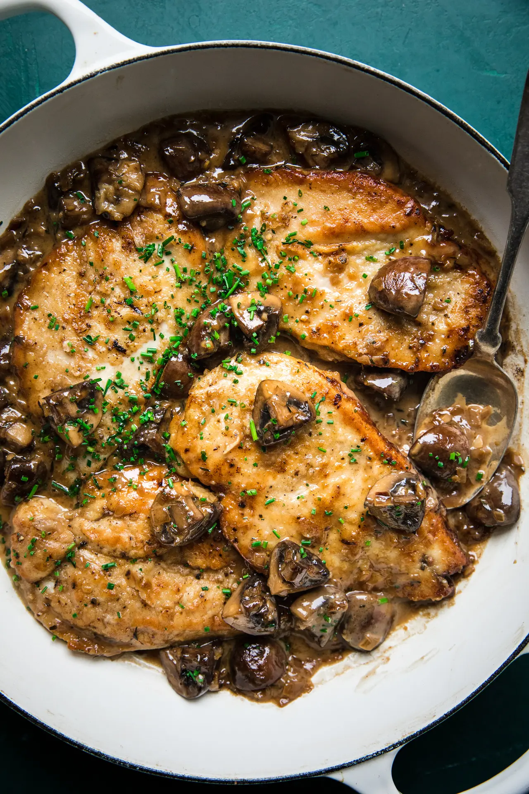

a preferable modern dish by the zambian and other partsof africa.
it tastes better than it looks.

INGREDIENTS
- 1/2 cup all-purpose flour (plain flour)
- 1 teaspoon kosher salt
- 1 teaspoon garlic powder
- 1/2 teaspoon black cracked pepper
- 2 large boneless skinless chicken breasts,
halved horizontally to make 4 fillets*
- 2 tablespoons olive oil, divided
- 4 tablespoons unsalted butter, divided
- 1 tablespoon unsalted butter as needed
- 8 ounces (250g) brown or Cremini mushrooms, sliced
- 4-5 cloves garlic, minced
- 3/4 cup dry Marsala wine
- 1 1/4 cup low-sodium chicken broth (or stock)
- 3/4 cup heavy cream (thickened cream,
evaporated milk or half and half may also be used)*
- 2 tablespoons fresh chopped parsley
HOW TO COOK
- Mix the flour, salt, garlic powder and pepper in a shallow bowl.
Dredge the chicken in the flour mixture and shake off excess.
- Heat 1 tablespoon oil and 2 tablespoons butter in a 12-inch pan or
skillet over medium-high heat until shimmering. Fry 2 of the chicken breasts until
golden-brown on both sides (about 3 to 4 minutes per side). Transfer to warm plate,
tent with foil and keep warm. Repeat the same with the remaining 2 chicken breasts.
- In the same pan with remaining pan grease leftover from the chicken, melt 1 tablespoon of butter.
Add the mushrooms and for 2-3 minutes until browned, scraping away at any of the leftover chicken
bits off the bottom of the pan.
- Add the garlic and cook until fragrant, about 1 minute.
- Pour in the Marsala and the broth and simmer until reduced by half and starting to thicken,
(about 10-15 minutes).
- Pour in the cream and return the chicken back into the sauce. Cook until the sauce thickens
(about 3 minutes). Garnish with chopped parsley and serve immediately.
(The sauce will continue to thicken off the heat.)
- Serve over cooked angel hair pasta (or pasta of choice), rice, potatoes,
cauliflower rice or zucchini noodles, if desired.
back to top
main page